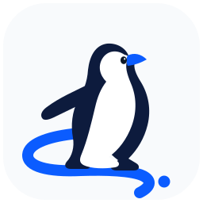

Travel BrowserConnect to Travel Agent
Keep the desktop app open. Your pairing is remembered across restarts.
Connection
Standalone CLI
Use a standalone local relay instead of a paired desktop app.

Travel BrowserKeep the desktop app open. Your pairing is remembered across restarts.
Use a standalone local relay instead of a paired desktop app.